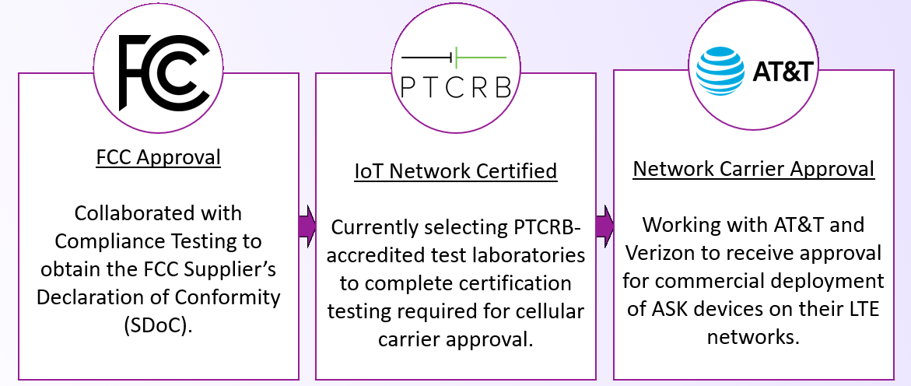
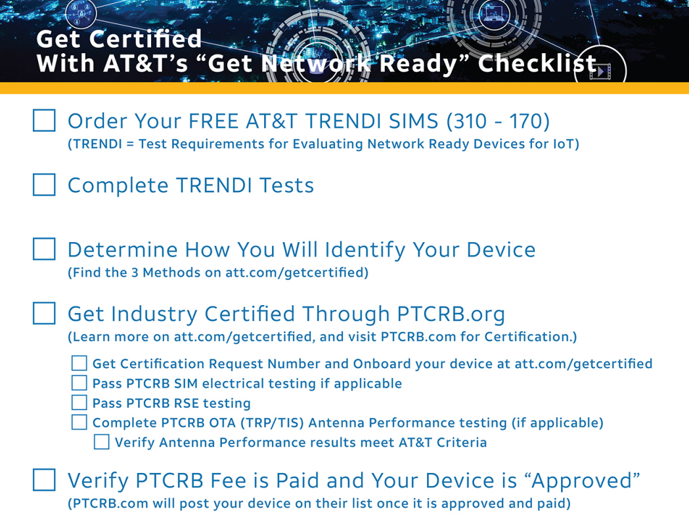

Abstract:
My first tenure at Auredia focused on developing functional firmware for an IoT edge device. My second focused on obtaining cellular carrier approval and provisioning SIM cards. Entering the summer, a vendor had finally been approved to perform the required FCC testing. This page provides a high-level guide to the process of certifying an IoT device for use on AT&T's network.
Context:
Any new IoT device must conform to government regulations. In the United States, these requirements are established by the Federal Communications Commission (FCC). Cellular modules and modems must meet applicable FCC requirements before they can be integrated into products sold in the United States. Since Auredia's device used a cellular module that had already received the necessary FCC certification, the finished product did not require the same certification process as a new radio module. Instead, the device would undergo Supplier's Declaration of Conformity (SDoC) testing to verify that the completed product remained within applicable limits for unintentional RF emissions.
SIM cards allow an IoT device to authenticate and connect to a cellular carrier's network. However, FCC compliance does not automatically mean a device is approved for use on a particular carrier. Carriers such as AT&T and Verizon maintain their own requirements for connected devices, including lists of pre-approved cellular modules and additional testing that may be required before SIMs can be activated for a device model. For Auredia, this meant that FCC compliance was only one part of the process; the device also had to satisfy AT&T's requirements before it could be deployed on the network.

AT&T:
AT&T certification portal can be found here. Because Auredia's edge device uses an AT&T-approved cellular module, the carrier certification process is more straightforward. To onboard the device, AT&T requires completion of IoT Network Certified (INC) certification along with a PTCRB request number. The onboarding process also includes a trial using AT&T-provided TRENDI SIM cards. Following successful testing, the edge device can be approved for integration with AT&T's cellular network. AT&T was selected as the target carrier because of its relatively straightforward certification path and existing approval of the cellular module used in Auredia's design.
Verizon:
Verizon certification portal can be found here. Verizon first requires companies to register to their Open Development portal and sign a non-disclosure agreement (NDA). Product documentation must then be provided to Verizon before testing. A third party lab will receive test samples and, upon success, Verizon's Wireless Network will now be accessible. All unique device identifiers (IMEIs) to be activated can be added to Verizon's database. The issue with Verizon's process is that Auredia's chosen module is not pre-approved by Verizon. Thus, testing could take upwards of years or be outright rejected. Rather than pursue this path with the existing hardware, a new hardware revision was designed around a module compatible with Verizon's requirements. This revision provides a more practical path for pursuing Verizon certification in the future.
FCC:
A major prerequisite for this product prior to PTCRB testing was ensuring it complied with the applicable regulatory requirements for operation in North America. FCC certifications (47 CFR Section 2.907) are for intentional radiators, while SDoC (47 CFR Section 2.906) is for unintentional radiators (digital circuitry). Because Auredia's edge device leverages an FCC certified radio module, only SDoC testing for circuit interference was required (Part 15 of FCC rules).
Compliance Testing became Auredia's approved vendor to perform SDoC testing. Two production-representative samples were shipped with their respective standard operating procedures (SOP). The full process, from shipping samples to receiving SDoC documentation, was completed within the month of June. Seeing test results and lab environments were some of the coolest parts of this phase.
By passing Compliance Testing, Auredia's IoT device was now legal to operate in United States and Canada. The device also required appropriate regulatory labeling before deployment, with FCC guidance for labeling requirements available here.
PTCRB:
To become IoT Network Certified (INC) requires PTCRB testing, which demonstrates a device's compliance to wireless standards for 4G and 5G network interoperability. Without PTCRB testing, vendors run risk that their devices will perform poorly on these networks. CTIA administers PTCRB/INC certifications and PTCRB labs perform this specific kind of testing. Below are tests performed by PTCRB labs in this process:
SVN
Verification of Software
UICC
Testing of SIM Slots
RSE
Spurious Emissions of Device
OTA
Total Radiated Power (TRP) / Total Isotropic Sensitivity (TIS) Measurements of Antennas
The first phase of the PTCRB process was selecting an authorized laboratory. AT&T provided a list of preferred PTCRB labs to fast track their certification process here. Potential vendors were evaluated using factors such as responsiveness, testing capabilities, commercial terms, expected schedule, and familiarity with AT&T's certification process. After evaluating the available options via decision matrix, Eurofins was selected and approved as Auredia's PTCRB testing laboratory.
The second phase was establishing the certification project within the PTCRB database and obtaining a PTCRB request number, one of AT&T's requirements for device onboarding. Get access to the PTCRB certification database here. Select “New User Registration” and complete the form. Note the registration must be for a specific individual and the email address used to register must be from a valid company domain. After the Certification Database Administrator verifies your access request, you will receive your username and password by email. If this is the company's first certification database access request, you will be appointed as the primary point of contact. From here, use this guide to submit a new request to PTCRB. This will return a PTCRB request number and add an IoT device to CTIA's database.
Phase 3 for PTCRB testing is testing samples and shipment. Here, collaborate with a chosen PTCRB vendor to ensure all test samples have been tailored for testing and that all required documentation is completed. Eurofins required Auredia to open an account with METrak to track project status and access final reports. In addition, they required completion of a test plan document that describes the Equipment Under Test (EUT). Finally, Eurofins require shipment of 4 test samples with all SOPs/peripherals needed for operation and monitoring. Test samples had to be adjusted to provide access to modem commands and disable power saving features (Watchdogs). Once this is all done PTCRB testing will begin.
Finally, the vendor of choice will perform PTCRB testing to ensure a device is IoT Network Certified. Maintain communication with the vendor to ensure no blockers occur. Testing will be completed in 3-4 weeks. Optimally, a device will pass testing along with TRENDI trial runs.
AT&T Onboarding:
Once Auredia obtained a PTCRB request number, the device could enter AT&T's onboarding process. An account was created and linked to the concurrently running PTCRB testing. A big proponent of AT&T's onboarding is having a trial period with TRENDI SIM cards. This will be performed by Eurofins. Below is a checklist provided by AT&T for onboarding:

Once these requirements are complete and testing is successfully passed, AT&T can certify the device for operation on its network. As of August 2026, Auredia's IoT edge device is completing PTCRB testing, with certification targeted for the following 3-4 weeks. Following approval, Auredia's primary ongoing responsibility will be maintaining AT&T's device database by periodically submitting the IMEIs of newly deployed edge devices.
Outcome/Engineering Takeaways:
For Auredia, this project took a project from design to pre-deployment. The device was tested and received/to receive approval by the FCC and AT&T. Certification procedures were documented so future hardware revisions will experience less blockers.
This project made me feel official. Arranging meetings with vendors, developping test samples, submitting documentation, and dealing with real money and real bureaucracy made me feel like a real engineer. I learned how to navigate regulatory requirements and how to work with vendors to get a product certified. As this was all new to me, I made mistakes. I didn't realize opening a PTCRB request costed 1.5K, which almost set our team back since that would mean PTCRB would have to become a approved vendor. This would not be feasible, since the parent company is very specific about payment terms with vendors (Net45 is the minimum). However, I adapted and was able to work with Eurofins, who was approved, to add that to our quote. Things like this made this project so real, and I have great hope for Auredia's IoT device and its future.